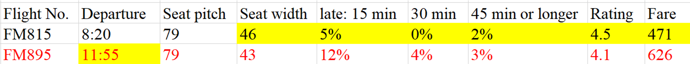
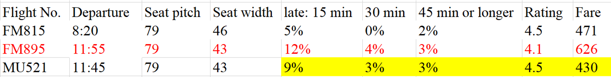

Round 1 is about the comparison within the same airline. The visualization below shows the fare range of the 10 airlines. The logic here is that we believe for the same airline, many factors - which are hard to determine in other methods - such as service and dining can be assumed identical, so only if one flight's other factors are better than the others', their fares can differ a lot. Otherwise, the flight with higher fare will definitely be excluded.
Example: Filter the Shanghai Airline FM 895
Shanghai Airline has the highest fare range, and it operates two flights - FM 815 and FM 895 - per day. From the table below, we can clearly find that FM 895, which has a higher fare, only has a better departure time, for other factors, it is even worse than FM 815.
However, we believe that we still cannot filter FM 895 directly because every passenger has different considerations. Therefore, we find a third party - MU 521. This flight has extremely similar good departure time than FM 895, but its other data, including the fare, is better than, or at least the same as, FM 895. Hence, now we can definitely filter FM 895.
Round 1 Result
Using the same method, we can also filter the flights FM 895, HO 1379, MU 271, MU 521, MU 727, CA 157, and JL 80, and the following remains in this tournament:
- Air China: CA 919/923/929
- All Nippon Airways: NH 920/968
- China Eastern: MU 523/537/575
- China Southern: CZ 8309
- Japan Airlines: JL 82/86
- Jetstar Japan: JQ 36
- Juneyao Airlines: HO 1385
- Peach Aviation: MM 898
- Shanghai Airlines: FM 815
- Spring Airlines: 9C 6217